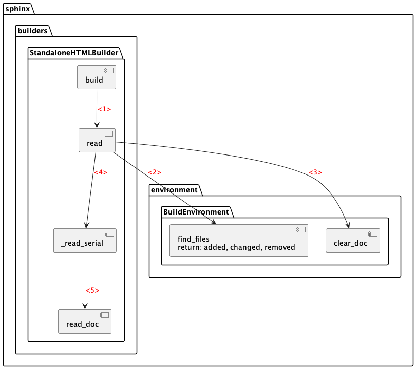

Warning
This draft documentation is under development.
Read¶
At the READING phase Sphinx reads all new and updated files.
This phase is declared by the app.build method as described in Building Phases.
Process¶
As mentioned earlier, the app.build method calls the app.builder.get_outdated_docs method that supplies
a generator of discovered updated documents, but this list is used after the READING phase.
The main steps of the READING phase are performed by the app.builder.read method as presented
on the following diagram:

Start the
app.builder.readmethod defined in thesphinx.builders.Builderclass. This method doesn’t have any input parameters declared. So it gets everything from the objects created during the INITIALIZATION phase. This method starts with logging the beginning of a phrase that will be later printed out on the screen:updating environment:
Call the
app.env.find_filesmethod defined in thesphinx.environment.BuildEnvironmentclass. This methods searches and returns three kinds of source documents:removed,changed, andadded. After calling this method, theapp.builder.readmethod emits the ‘env-get-outdated’ event.Note
This is where you can handle the ‘env-get-outdated’ event emitted by the
app.builder.readmethod.In a handler, you are able to make additional changes. The handler gets the names of all the three groups of source documents and it must return a list of updated sets of documents or an empty list. This is how
app.builder.readmethod emits the event and updates thechangedset:for docs in self.events.emit('env-get-outdated', self.env, added, changed, removed): changed.update(set(docs) & self.env.found_docs)
Call the
app.env.clear_docmethod to remove those built documents whose source files were removed. Before calling this method, theapp.build.readmethod emits the ‘env-purge-doc’ event:for docname in removed: self.events.emit('env-purge-doc', self.env, docname) self.env.clear_doc(docname)
Note
This is where you can handle the ‘env-purge-doc’ event emitted by the
app.builder.readmethod before removing the documents.After the
changedandremovedlists are processed, theapp.builder.readmethod updates the global tables of contents (env.glob_toctrees). The logger receives the size of each of the three lists:%s added, %s changed, %s removed
Before the next step, the
app.builder.readmethod emits the ‘env-before-read-docs’ event, providing the list of lists of added and changed documents:self.events.emit('env-before-read-docs', self.env, docnames)
Note
This is where you can handle the ‘env-before-read-docs’ event emitted by the
app.builder.readmethod before it starts reading and parsing the added and changed documents. A handler can change or reorder those documents.Verify if parallel processing is required by checking the
self.app.parallelattribute and respectively call theapp.builder._read_parallelor theapp.builder._read_serialmethod. This example process uses the latter, and this step takes most time of the READING phase. This method receives as input a list of names of the updated and added documents and then it orchestrates the document reading process for every document in a cycle through thesphinx.util.status_iteratorfunction. The latter runs the following steps for each document in a cycle:Emit the ‘env-purge-doc’ event to notify the subscribed handlers that a particular document will be removed:
self.events.emit('env-purge-doc', self.env, docname)
Note
This is where you can handle the ‘env-purge-doc’ event emitted by the
app.builder._read_serialmethod.Remove the document from the
app.envobject:self.env.clear_doc(docname)
Launch the
app.build.read_docmethod to start parsing the document as a doctree object:self.read_doc(docname)
While parsing a document, the
sphinx.util.status_iteratorfunction prints out a message mentioning this document, for example:reading sources... [100%] tutorial/ui/index
Every line rewrites the previous one, so finally you will see the name of the last parsed document. The displayed percentage is proportional to the number of parsed documents.
Call the
app.build.read_docmethod to start parsing the document as a doctree object. This method interacts with thedocutilspackage using the following steps:Run the
app.registry.get_publishermethod to create the main docutils objectpublisherof the Parser class:publisher = self.app.registry.get_publisher(self.app, filetype)
Supply the source document to
publisher:publisher.set_source(source_path=filename)
Run the document parsing:
publisher.publish()
Get the parsed object
doctree:doctree = publisher.document
Save the
doctreeobject in the pickled file which name consists of the document name extended with the.doctreesuffix.
After all documents are parsed, the pickled storage of the simplest project looks similar to this:
_build/.doctrees ├── environment.pickle ├── folder1 │ └── index.doctree ├── folder2 │ └── index.doctree └── index.doctree
After the
app.builder._read_serialmethod completes parsing the documents, theapp.builder.readmethod performs the following final operations within the READING phase:Verify if the root document is built and send an error message if it isn’t.
Emit the ‘env-updated’ event to request the subscribed handlers if they need to add more documents in this phase:
for retval in self.events.emit('env-updated', self.env): if retval is not None: docnames.extend(retval)
If there are additional documents, extend the
docnameslist.Note
This is where you can handle the ‘env-updated’ event emitted by the
app.builder.readmethod after it gets parsed documents. A handler can add more document names to the list of names that theapp.builder.readmethod will return to its caller, that is, to theapp.builder.buildmethod (see the next step).
Return the list of names of the updated documents.